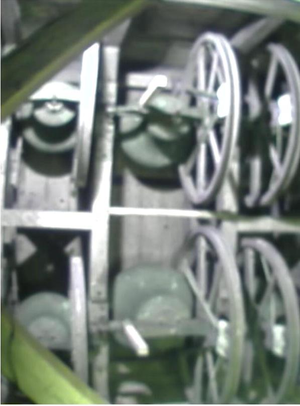
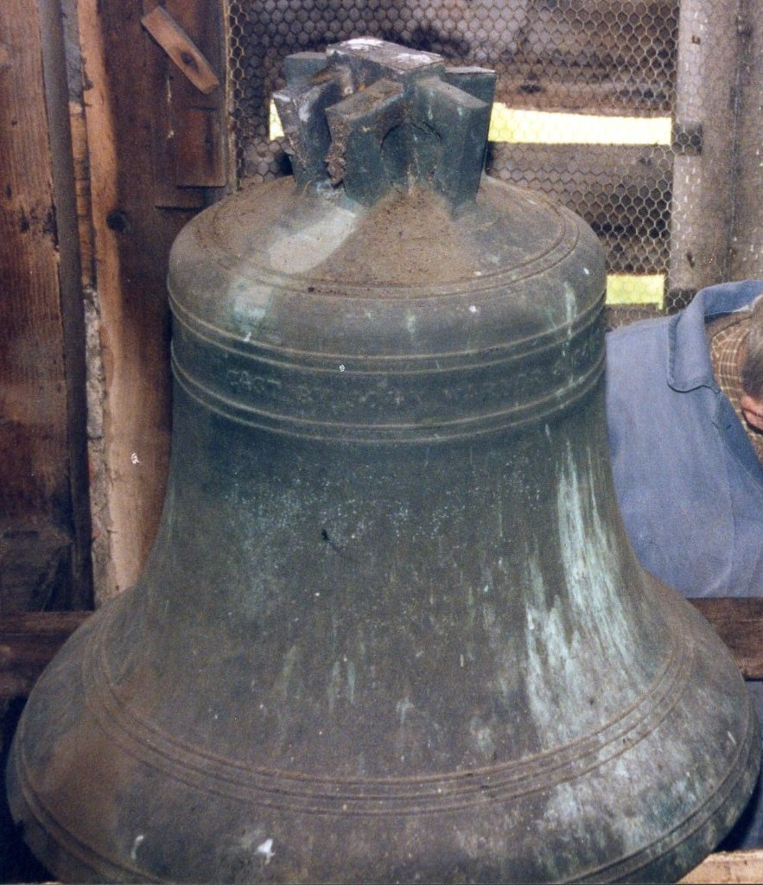
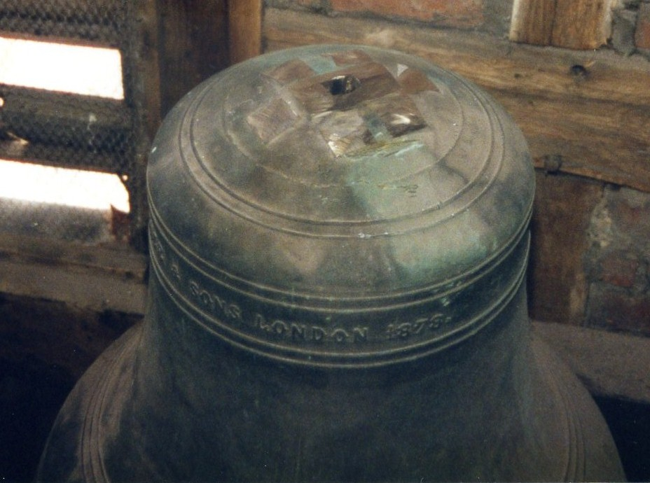

Cast by John Warner & Sons of Cripplegate, London, in 1878 — and rung continuously here ever since.
In 1878 the two badly cracked remaining bells were sold to John Warner & Sons of Cripplegate, London. Rubbings of both are preserved in the British Museum.
The current six bells were cast by Warner & Sons in 1878. All the fittings and the frame in the present installation date from 1878, with the exception of the ball bearings and ground pulleys — these were renewed in 1951 by Mears and Stainbank of the Whitechapel Bell Foundry.
In 1991, Eayre and Smith of Derby, working in conjunction with members of the band, overhauled the bells. The cast-in crown staples were removed (see photographs below). Five holes were drilled in the top of each bell — the central hole providing attachment for the clapper, the other four connecting the bell to the headstock. The bearings were replaced (they had suffered from over-greasing) and the loose gudgeons were also replaced. The bearings will not require greasing again for 20–25 years following this work. The bells were turned through 90°, and the wheels, pulleys, ropes, stays, sliders and clappers were all replaced. Finally the Ellacombe chiming apparatus was removed.
Since 1991 the top ends of the ropes have been replaced once, and subsequently all the ropes and sallies have been replaced with polypropylene top ends.

| Bell | Cwt | Qtr | lb | Note | Diameter |
|---|---|---|---|---|---|
| Treble | 3 | 3 | 12 | G | 25" |
| Two | 4 | 0 | 19 | F | 26" |
| Three | 4 | 1 | 20 | E♭ | 27½" |
| Four | 5 | 0 | 12 | D | 28½" |
| Five | 6 | 0 | 7 | C | 31" |
| Tenor | 7 | 0 | 11 | B♭ | 34" |
Weights are taken from the plaque in the ringing chamber.
This ring of bells was placed in this tower at the restoration & enlargement of the church — Michaelmas 1878.
Frances Emma Honywood — Rector
Henry T. W. Eyre — Vicar
Mark Cottee, Norris Hobbs — Churchwardens
Cast-in crown staples — iron loops cast into the bell to hold the clapper — corrode over time and can crack the bell. Replacing them is a major piece of work. Here are two of our bells before and after.


The tower at St Peter's is of timber-frame construction with brick infill. The outer walls are covered with cedar shingles, and a shingled spire surmounts the tower. The shingles were replaced in 2012 as part of the work to replace the church roof.
During work on the tower, parts of the 1878 oak frame were found to be rotten. Remedial work was undertaken, and metal plates were used to provide additional support at the joints.